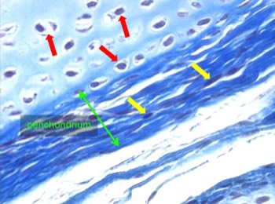

Het perichondrium
Kraakbeenmatrix is niet verkalkt, waardoor voedingsstoffen en afvalstoffen door diffusie via de weefselvloeistof de kraakbeencellen kunnen bereiken. Volwassen kraakbeen bevat geen bloedvaten, lymfevaten of zenuwen. Deze bevinden zich wél in het perichondrium. Het perichondrium is een laag van dicht onregelmatig bindweefsel dat in regel het kraakbeen perifeer omgeeft. Een uitzondering hierop vormt het gewrichtskraakbeen: het vrije oppervlak hiervan is niet bekleed met perichondrium en voeding gebeurt door diffusie vanuit het synoviale vocht in de gewrichtsruimte.
Het perichondrium is van groot belang voor de groei en onderhoud van het kraakbeenstuk. Kraakbeencellen kunnen differentiëren uit bindweefselcellen in het perichondrium.
Kraakbeenmatrix is niet verkalkt, waardoor voedingsstoffen en afvalstoffen door diffusie via de weefselvloeistof de kraakbeencellen kunnen bereiken. Volwassen kraakbeen bevat geen bloedvaten, lymfevaten of zenuwen. Deze bevinden zich wél in het perichondrium. Het perichondrium is een laag van dicht onregelmatig bindweefsel dat in regel het kraakbeen perifeer omgeeft. Een uitzondering hierop vormt het gewrichtskraakbeen: het vrije oppervlak hiervan is niet bekleed met perichondrium en voeding gebeurt door diffusie vanuit het synoviale vocht in de gewrichtsruimte.
Het perichondrium is van groot belang voor de groei en onderhoud van het kraakbeenstuk. Kraakbeencellen kunnen differentiëren uit bindweefselcellen in het perichondrium.

Detail van kraakbeen en het omliggende perichondrium. Terwijl in het kraakbeen de cellen (chondrocyten) terug te vinden zijn in lacunes (rode pijlen), zie je van de fibroblasten in het perichondrium enkel de platgedrukte kern (gele pijlen).
Vordering zelfstudie kraakbeen: